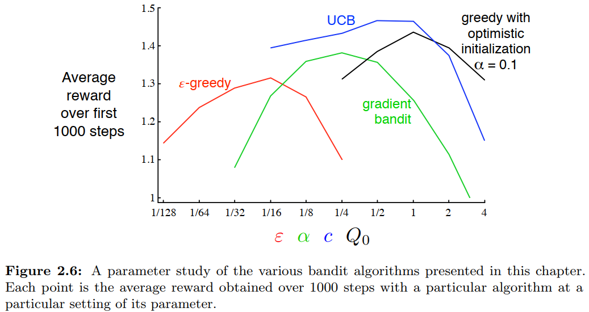

Off-policy vs On-policy
During each trial, should the model’s learning be guided by the human’s actual choice, or by a choice stochastically generated from the model’s own estimated probabilities? This question represents two different perspectives in reinforcement learning: off-policy (akin to Q-learning) and on-policy (akin to SARSA).
run_m(
...,
policy = c("off", "on")
...
)
if (policy == "off") {
data[[rob_choose]][i] <- data[[sub_choose]][i]
}
else if (policy == "on") {
data[[rob_choose]][i] <- sample(
x = c(data[[L_choice]][i], data[[R_choice]][i]),
prob = c(data$L_prob[i], data$R_prob[i]),
size = 1
)
}These two strategies have distinct advantages and are suited for different analytical goals:
Off-policy (e.g., Q-learning): This approach generally leads to more accurate parameter estimation. In parameter recovery tests, this is demonstrated by a higher correlation between the ground-truth input parameters and the final fitted output parameters.
On-policy (e.g., SARSA): This approach, in contrast, is better at mimicking human behavioral patterns. Its strength is evident in the ability of the resulting parameters to better reproduce key experimental effects observed in psychological studies.
In published research, many studies favor the off-policy approach to achieve greater parameter accuracy. However, there is no definitive “better” choice. The most suitable strategy for your research depends on your primary objective—whether it is to precisely quantify cognitive processes or to more faithfully simulate behavioral patterns. The final decision is left to the user.
Value Function
Utility Function
The subjective value of objective rewards is a topic that requires discussion, as different scholars may have different perspectives. This can be traced back to the Stevens’s Power Law. In this model, you can customize your utility function. By default, I use a power function based on Stevens’ power law to model the relationship between subjective and objective value.
According to Kahneman’s Prospect Theory, individuals exhibit distinct utility functions for gains and losses. Referencing Nilsson et al. (2012), we have implemented the model below.
func_gamma <- function(
i, L_freq, R_freq, L_pick, R_pick, L_value, R_value, var1 = NA, var2 = NA,
value, utility, reward, occurrence,
gamma, alpha, beta
){
# Stevens's Power Law
if (length(gamma) == 1) {
gamma <- as.numeric(gamma)
utility <- sign(reward) * (abs(reward) ^ gamma)
}
# Prospect Theory
else if (length(gamma) == 2 & reward < 0) {
gamma <- as.numeric(gamma[1])
beta <- as.numeric(beta)
utility <- beta * sign(reward) * (abs(reward) ^ gamma)
}
else if (length(gamma) == 2 & reward >= 0) {
gamma <- as.numeric(gamma[2])
beta <- 1
utility <- beta * sign(reward) * (abs(reward) ^ gamma)
}
else {
utility <- "ERROR"
}
return(list(gamma, utility))
}Reference
Kahneman, D., & Tversky, A. (2013). Prospect theory: An analysis of decision under risk. In Handbook of the fundamentals of financial decision making: Part I (pp. 99-127). https://doi.org/10.1142/9789814417358_0006
Nilsson, H., Rieskamp, J., & Wagenmakers, E. J. (2011). Hierarchical Bayesian parameter estimation for cumulative prospect theory. Journal of Mathematical Psychology, 55(1), 84-93. https://doi.org/10.1016/j.jmp.2010.08.006
Learning Rate
In run_m, there is an argument called
initial_value. Considering that the initial value has a
significant impact on the parameter estimation of the learning
rates (\(\eta\)) When the
initial value is not set (initial_value = NA), it is taken
to be the reward received for that stimulus the first time.
“Comparisons between the two learning rates generally revealed a positivity bias (\(\alpha_{+} > \alpha_{-}\))”
“However, that on some occasions, studies failed to find a positivity bias or even reported a negativity bias (\(\alpha_{+} < \alpha_{-}\)).”
“Because Q-values initialization markedly affect learning rate and learning bias estimates.”
binaryRL::run_m(
...,
initial_value = NA,
...
)Reference
Palminteri, S., & Lebreton, M. (2022). The computational roots of positivity and confirmation biases in reinforcement learning. Trends in Cognitive Sciences, 26(7), 607-621. https://doi.org/10.1016/j.tics.2022.04.005
Exploration–Exploitation Trade-off
“The ε-greedy methods choose randomly a small fraction of the time, whereas UCB methods choose deterministically but achieve exploration by subtly favoring at each step the actions that have so far received fewer samples. Gradient bandit algorithms estimate not action values, but action preferences, and favor the more preferred actions in a graded, probabilistic manner using a soft-max distribution. The simple expedient of initializing estimates optimistically causes even greedy methods to explore significantly.”

Reference
Sutton, R. S., & Barto, A. G. (2018). Reinforcement Learning: An Introduction (2nd ed). MIT press.
Initial Value
“Initial action values can also be used as a simple way to encourage exploration. Suppose that instead of setting the initial action values to zero, as we did in the 10-armed testbed, we set them all to +5. Recall that the \(q_{*}(a)\) in this problem are selected from a normal distribution with mean 0 and variance 1. An initial estimate of +5 is thus wildly optimistic. But this optimism encourages action-value methods to explore.”
Reference
Sutton, R. S., & Barto, A. G. (2018). Reinforcement Learning: An Introduction (2nd ed). MIT press.
Epsilon Related
Participants in the experiment may not always choose based on the
value of the options, but instead select randomly on some trials. This
is known as exploration strategy. You can implement an \(\epsilon\)-first model by setting the
threshold parameter in the run_m. For
instance, if the threshold is set to threshold = 20 (The
default value is set to 1), it means that participants will choose
completely randomly until trial number 20, after which their choices
will be based on value.
The \(\epsilon\)-greedy strategy is
commonly employed in reinforcement learning models. With this approach
(epsilon = 0.1), the participant has a 10% probability of
randomly selecting an option and a 90% probability of choosing based on
the currently learned value of the options.
You can also create an \(\epsilon\)-decreasing exploration strategy
by setting lambda instead of epsilon. In this
model, the probability of participants choosing randomly will decrease
as the trial number increases.
Reference
Namiki, N., Oyo, K., & Takahashi, T. (2014, December). How do
humans handle the dilemma of exploration and exploitation in sequential
decision making?. In Proceedings of the 8th International Conference on
Bioinspired Information and Communications Technologies (pp. 113-117).
https://doi.org/10.4108/icst.bict.2014.258045
Upper-Confidence-Bound
The \(\pi\) parameter in
Upper-Confidence-Bound (UCB) Action Selection, which is c
in the book, is a parameter used to control the ratio of the bias value
given to less-selected options. A larger value of this parameter will
assign a greater bias to options that have been chosen infrequently.
This value defaults to NA, ensuring each option is selected
at least once. Once an option has been chosen, its bias will be set to
zero. If \(\pi\) is very small, for
example 0.001, the effect is almost the same.
Reference
Sutton, R. S., & Barto, A. G. (2018). Reinforcement Learning: An Introduction (2nd ed). MIT press.
Soft-Max Function
“With continuous policy parameterization the action probabilities change smoothly as a function of the learned parameter, whereas in \(\epsilon\)-greedy selection the action probabilities may change dramatically for an arbitrarily small change in the estimated action values, if that change results in a different action having the maximal value.”
Reference
Sutton, R. S., & Barto, A. G. (2018). Reinforcement Learning: An Introduction (2nd ed). MIT press.
To avoid the occurrence of zero probabilities in the softmax
function—which would lead the log-likelihood to diverge to negative
infinity (log(P) -> log(0) -> -Inf)—we imposed a
lapse rate of 0.02. In TAFC tasks, this adjustment guarantees that each
option retains a minimum selection probability of 1%.
Model Fit
Loss Function
The primary aim of binaryRL is to enable reinforcement
learning models to exhibit behaviors similar to human subjects. While
there are various ways to formulate loss functions, the
built-in loss function expresses the resemblance between human behavior
and model predictions.
Log Likelihood
\[ \log P(D|\theta)= \sum B_{L} \times \log P_{L} + \sum B_{R} \times \log P_{R} \]
NOTE: \(B_{L}\) and \(B_{R}\) the option that the subject chooses. (\(B_{L} = 1\): subject chooses the left option; \(B_{R} = 1\): subject chooses the right option); \(P_{L}\) and \(P_{R}\) represent the probabilities of selecting the left or right option, as predicted by the reinforcement learning model. \({k}\) the number of free parameters in the model; \({n}\) represents the total number of trials in the paradigm.
Reference
Hampton, A. N., Bossaerts, P., & O’doherty, J. P. (2006). The role of the ventromedial prefrontal cortex in abstract state-based inference during decision making in humans. Journal of Neuroscience, 26(32), 8360-8367. https://doi.org/10.1523/JNEUROSCI.1010-06.2006
AIC & BIC
Additionally, the program also calculates AIC and BIC based on the Log-Likelihood, number of parameters, and number of trials to penalize overly complex models.
\[ AIC = - 2 LL + 2 k \]
\[ BIC = - 2 LL + k \times \log n \]
Reference
Akaike, H. (1974) A New Look at the Statistical Model Identification. IEEE Transactions on Automatic Control, AC- 19, 716-723. http://dx.doi.org/10.1109/TAC.1974.1100705
Schwarz, G. (1978) Estimating the Dimension of a Model. Annals of Statistics, 6, 461-464. http://dx.doi.org/10.1214/aos/1176344136